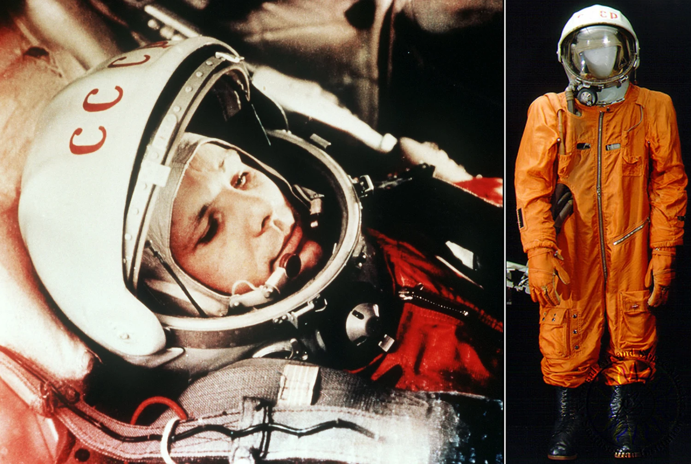

 12 kwietnia 1961 roku przeszedł do historii jako dzień, w którym człowiek po raz pierwszy opuścił Ziemię i poleciał w kosmos. Tego dnia radziecki kosmonauta Jurij Gagarin na pokładzie statku kosmicznego Wostok 1 wykonał pełną orbitę wokół Ziemi, stając się tym samym pierwszym człowiekiem w kosmosie. Lot trwał zaledwie 108 minut, ale te 108 minut na zawsze zmieniło bieg historii.
Gagarin, który miał zaledwie 27 lat, stał się ikoną nie tylko w Związku Radzieckim, ale i na całym świecie. Podczas swojego lotu, wypowiedział słynne słowa: "Pojiechali!", gdy statek wystartował – to proste i swobodne wyrażenie doskonale oddaje jego podejście do tej historycznej chwili.
 Po powrocie na Ziemię, Gagarin został bohaterem narodowym, a jego wyczyn zainspirował dalsze eksploracje kosmosu, jednocześnie intensyfikując wyścig kosmiczny między USA a ZSRR. Misja ta była kamieniem milowym, który pokazał, że człowiek może przetrwać w kosmosie i wrócić bezpiecznie na Ziemię.
Po powrocie na Ziemię, Gagarin został bohaterem narodowym, a jego wyczyn zainspirował dalsze eksploracje kosmosu, jednocześnie intensyfikując wyścig kosmiczny między USA a ZSRR. Misja ta była kamieniem milowym, który pokazał, że człowiek może przetrwać w kosmosie i wrócić bezpiecznie na Ziemię.